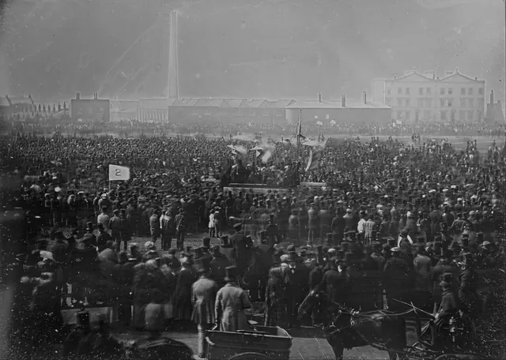

Cidadania, módulo 1, sessão 08
Quem decide o quê?
Versão para imprimir: o material, os 14 exercícios e o papel do fim. Fazes tudo sozinho, só com uma caneta.
Parte 1, ver antes de concluir
Abre: Quem decide o quê?
Caso inventado.
A passadeira em frente ao portão da escola vai desaparecer: passa a haver só um semáforo na esquina, a duzentos metros. A turma soube por um aviso afixado na paragem, assinado pela câmara municipal. Há quem queira juntar assinaturas, quem prefira falar com a junta de freguesia, ao lado da escola, e quem ache que reclamar não serve de nada.
A quem se pede, e com que fundamento?
Decide
A turma deve fazer um pedido escrito, com assinaturas, contra a mudança?
☐ Sim ☐ Não ☐ Depende
Escreve, numa linha, a razão que pesa mais para ti.
Exercício 1: Onde começa a conclusão
Nesta frase sobre a passadeira, sublinha as duas palavras que anunciam a conclusão.
Às 8h15 atravessam ali muitos alunos e o semáforo fica a duzentos metros, por isso a passadeira deve ficar.
Exercício 2: Contar sem identificar
Para mostrar que muita gente atravessa no portão, a turma vai registar quem passa entre as 8h e as 8h30. O que precisa de anotar?
- Uma fotografia de cada pessoa que atravessa.
- O nome e a turma de cada aluno que passa.
- Quantas pessoas passam, e a que horas passam.
Resposta: ______
Olha: Uma multidão em 1848
Antes de olhar Olha primeiro; só depois lê a legenda.

William Edward Kilburn, View of the Great Chartist Meeting on Kennington Common, 1848, daguerreótipo. Royal Collection (RCIN 2932484). Registo no Wikimedia Commons. Domínio público.

Exercício 3: O que se vê
Sem ler a legenda: o que mostra a fotografia?
- Uma multidão de chapéu à volta de um palanque.
- Uma fila de pessoas à porta de uma fábrica.
- Um público sentado a ver uma peça de teatro.
Resposta: ______
Exercício 4: O que não se vê
Pela fotografia e pela legenda, sabes a quem se dirigia aquela multidão e o que pedia.
☐ Verdadeiro ☐ Falso
Lê: Pedir é um direito
Antes de ler A quem se pede?
Artigo 52.º«Todos os cidadãos têm o direito de apresentar […] aos órgãos de soberania […] ou a quaisquer autoridades petições […] para defesa dos seus direitos, da Constituição, das leis ou do interesse geral […]»
Artigo 23.º«Os cidadãos podem apresentar queixas […] ao Provedor de Justiça, que as apreciará sem poder decisório, dirigindo aos órgãos competentes as recomendações necessárias […]»
Constituição, artigos 52.º e 23.º
Lei n.º 43/90, artigo 2.º, n.º 3«Entende-se por reclamação a impugnação de um acto perante o órgão, funcionário ou agente que o praticou ou perante o seu superior hierárquico.»
Lei n.º 43/90, artigo 8.º, n.º 1«O exercício do direito de petição obriga a entidade destinatária a receber e examinar […] bem como a comunicar as decisões que forem tomadas.»
Exercício 5: Em defesa de quê
No artigo 52.º, n.º 1, sublinha as palavras que dizem em defesa de quê se pode pedir.
Todos os cidadãos têm o direito de apresentar, individual ou colectivamente, aos órgãos de soberania, aos órgãos de governo próprio das regiões autónomas ou a quaisquer autoridades petições, representações, reclamações ou queixas para defesa dos seus direitos, da Constituição, das leis ou do interesse geral e, bem assim, o direito de serem informados, em prazo razoável, sobre o resultado da respectiva apreciação.
Exercício 6: Quem faz o quê
«Compete à Assembleia da República: […] Fazer leis sobre todas as matérias, salvo as reservadas pela Constituição ao Governo […] O Governo é o órgão de condução da política geral do país […] Os tribunais são os órgãos de soberania com competência para administrar a justiça em nome do povo.»
Situações novas: segundo a Constituição, a que órgão cabe cada uma?
- Decidir, num processo, quem tem razão num conflito
- Definir a política de transportes para todo o país
- Aprovar uma lei nova sobre o direito de petição
- O Governo
- Um tribunal
- A Assembleia da República
Liga: 1 ___ 2 ___ 3 ___
Exercício 7: A junta ou a câmara
A junta de freguesia fica ao lado da escola, e a turma pensa escrever-lhe sobre a passadeira. É o melhor destinatário?
- Não: o pedido deve ir à Assembleia da República.
- Não: o pedido deve ir a quem decidiu, a câmara.
- Sim: a junta é a autoridade mais perto da rua.
Resposta: ______
Exercício 8: Recomendar não é anular
Caso real (Provedor de Justiça, Lisboa, 2016): após uma queixa, o Provedor detetou ilegalidade em normas do plano municipal e fez uma recomendação ao presidente da câmara. A recomendação anulou-as.
☐ Verdadeiro ☐ Falso
Conceito: A quem, o quê, porquê
O caso
A turma quer a passadeira de volta. Basta dizê-lo?
Mais perto
| Parte | Pergunta | No caso |
|---|---|---|
| destinatário | a quem? | quem assinou o aviso |
| pedido | o quê? | uma medida concreta |
| fundamento | porquê? | um facto que se confirma e o artigo |
O nome
Pedido fundamentado
Um pedido a quem pode decidir, que diz o que se quer e porquê, com factos que se confirmam.
O que não é
Não é juntar assinaturas: o número dá força, não fundamento.
Se o escrito não diz o que se pede, a Lei n.º 43/90 (artigo 9.º, n.º 5) manda: «A entidade destinatária convida o peticionário a completar o escrito apresentado» quando «não especifique o objecto de petição».
Exercício 9: As partes de um pedido
Caso inventado: um pedido à diretora sobre o horário do bar. Liga cada parte ao papel que tem no pedido.
- porque há aulas às 8h15 e o bar só abre às 8h30,
- ao abrigo do artigo 52.º da Constituição.
- solicitamos que o bar abra às 8h, e não às 8h30,
- À diretora da escola,
- A medida que se quer
- A quem se dirige
- O facto que o apoia
- A norma invocada
Liga: 1 ___ 2 ___ 3 ___ 4 ___
Exercício 10: Um fundamento que se confirma
Caso inventado: a turma pede mais um autocarro às 17h40. Que frase dá ao pedido um fundamento que se pode confirmar?
- Sem outro autocarro, vai haver alunos a faltar.
- Os alunos acham que um autocarro às 17h40 é pouco.
- Na terça, 38 alunos ficaram à espera desse autocarro.
Resposta: ______
Parte 2, pesar e escrever
Volta ao caso: A razão da câmara
Parte 2
Caso inventado.
Em letra pequena, o aviso dá a razão: quem sai da rotunda não vê quem atravessa junto ao portão, e o semáforo da esquina é mais seguro. A turma contou, numa manhã: entre as 8h e as 8h30, 140 alunos atravessaram ali. Um vizinho avisa: «Ninguém vai andar duzentos metros para trás.»
Exercício 11: O que se sabe e o que falta
Depois da razão da câmara e da contagem: o que já está no caso e o que ainda falta saber?
- Quantos atravessaram numa manhã
- Quantos alunos vão mesmo até ao semáforo
- Quem decidiu tirar a passadeira
- Se o semáforo é mais seguro do que a passadeira
- Ainda está em aberto
- Já está no caso
Liga: 1 ___ 2 ___ 3 ___ 4 ___
Em turma
A turma deve fazer um pedido escrito, com assinaturas, contra a mudança?
☐ Sim ☐ Não ☐ Depende
Compara com a tua escolha do início. Que prova pesa mais? ☐ A contagem da manhã ☐ O aviso da câmara ☐ O artigo 52.º
Exercício 12: Facto, regra ou razão
Liga cada frase ao que ela é numa justificação.
- «[…] o direito de serem informados, em prazo razoável, sobre o resultado […]»
- O aviso da mudança é assinado pela câmara municipal.
- «Ninguém vai andar duzentos metros para trás.»
- Uma regra escrita num texto legal
- A razão de uma das partes
- Um facto do caso
Liga: 1 ___ 2 ___ 3 ___
Exercício 13: A justificação por ordem
Põe a justificação por ordem, do que aconteceu ao que ainda falta saber.
- Falta saber se o semáforo da esquina é mais seguro do que a passadeira.
- A turma pode pedir à câmara que reveja a decisão, com a contagem como prova.
- A Constituição dá o direito de pedir a quaisquer autoridades, em defesa do interesse geral.
- O aviso é da câmara, e numa manhã atravessaram ali 140 alunos.
Ordem: ___ → ___ → ___ → ___
Exercício 14: A conclusão que vai longe de mais
Só uma destas conclusões vai além do que o caso e a contagem mostram. Encontra-a.
- A câmara decidiu sem ouvir ninguém antes.
- A contagem mostra que a passagem é muito usada.
- A câmara deu uma razão de segurança para mudar.
Resposta: ______
Agora, em papel
Num papel pequeno, sozinho e sem telemóvel.
A quem se pede, e com que fundamento?
CódigoData
- A tua conclusão, por agora: a quem pedes e o quê.
- Uma prova: um facto do caso e uma expressão exata, entre aspas, com o artigo.
- Uma dúvida que ainda tens.
O que conta
- A conclusão diz a quem se pede e o quê, sem ir além das provas.
- A prova junta um facto a uma expressão exata, com o artigo.
- A dúvida, respondida, podia mudar o pedido.
Um exemplo, sobre outro caso
Outro caso, inventado: o bebedouro do pavilhão está avariado desde outubro.
- Conclusão: pede-se à direção que o mande reparar.
- Prova: está avariado desde outubro; pede-se «para defesa […] do interesse geral» (artigo 52.º, n.º 1).
- Dúvida: a reparação cabe à escola ou a outra entidade?